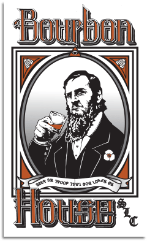

Writing in the Deseret Alphabet with Web Fonts
June 29, 2014
If you’re here for the code and want to skip most of the history and linguistics, click here.
The State of Deseret
This past weekend I went camping in the San Rafael Swell and became interested in my native state of Utah’s history and unique culture.
Evidence of humans is found in Utah for as far back as 12,000 years ago. Various Native American tribes and cultures (Freemont, Puebloan, etc.) solely occupied the land until the first of the Mormon pioneers arrived with their leader Brigham Young in 1847.
They settled in by vastly changing the desert environment into a habitable landscape with amazing feats of industry including irrigation and agriculture, timber and mining, and constructing communities from the resources around them. They created a society from scratch.
The settlers were very isolated and in a political and territorial limbo that went from technically belonging to Mexico, to a near immediate statehood proposal (The State of Deseret), and then remaining a U.S. territory - all the while settling most of the western United States including cities like Las Vegas, San Bernardino, most of Idaho and Nevada, a good chunk of Arizona and many other western states.
Brigham Young and the Mormons were the de facto government throughout this time (some say they still are) and as such were providing public necessities like schooling, and founded the precursor to the University of Utah, the University of Deseret.
The Deseret Alphabet
This was a time when there were several efforts to reform the traditional Latin English alphabet into something phonetic, more easily taught to immigrants and children, and optimized for handwriting. Brigham Young and the board of regents of the University of Deseret saw their position as an opportunity to get in on this action.
In addition to the aforementioned reasons for alphabet reform, the Mormon leadership believed a new writing system would benefit them in other ways such as more unification, solidifying their unique identity, and some speculate that there was a bit of a secret-keeping draw to it as well, though that claim has been refuted by several scholars.
The Deseret Alphabet was developed over the course of several years and iterations beginning before the pioneers made their way across the plains, and finally had its first printing in 1859 by the Deseret News. Periodic sample prints of the alphabet came in the newspaper until the first books were published in the late 1860’s which sold very poorly. The alphabet died with Brigham Young in 1877.
It is amazing how much research there is on the Deseret Alphabet, with how few people seem to know about it. There has even been an effort to print many classic literary masterpieces in the alphabet. It was introduced in Unicode in 2001, allowing for hobbyists, linguists, and historians to use the alphabet more easily.
Learning the alphabet
Here’s a pronunciation table:
| Glyph | IPA | Sound | Glyph | IPA | Sound |
|---|---|---|---|---|---|
| 𐐀 | /iː/ | “e” in me | 𐐊 | /ʌ/ | “u” in luck |
| 𐐁 | /eɪ/ | “ay” in day | 𐐋 | /ʊ/ | “u” in pull |
| 𐐂 | /ɑː/ | “a” in cart | 𐐌 | /aɪ/ | “y” in my |
| 𐐃 | /ɔː/ | “au” in caught | 𐐍 | /aʊ/ | “ow” in cow |
| 𐐄 | /oʊ/ | “o” in go | 𐐎 | /w/ | “w” in wow |
| 𐐅 | /uː/ | “oo” in do | 𐐏 | /j/ | “y” in yes |
| 𐐆 | /ɪ/ | “i” in sit | 𐐐 | /h/ | “h” in hi |
| 𐐇 | /ɛ/ | “e” in bet | 𐐑 | /p/ | “p” in pet |
| 𐐈 | /æ/ | “a” in cat | 𐐒 | /b/ | “b” in boy |
| 𐐉 | /ɒ/ | “o” in lot | 𐐓 | /t/ | “t” in tank |
| Glyph | IPA | Sound | Glyph | IPA | Sound |
|---|---|---|---|---|---|
| 𐐔 | /d/ | “d” in dog | 𐐞 | /z/ | “z” in zoo |
| 𐐕 | /tʃ/ | “ch” in church | 𐐟 | /ʃ/ | “sh” in ship |
| 𐐖 | /dʒ/ | “j” in jump | 𐐠 | /ʒ/ | “s” in measure |
| 𐐗 | /k/ | “k” in kite | 𐐡 | /r/ | “r” in red |
| 𐐘 | /ɡ/ | “g” in girl | 𐐢 | /l/ | “l” in love |
| 𐐙 | /f/ | “f” in food | 𐐣 | /m/ | “m” in mom |
| 𐐚 | /v/ | “v” in voice | 𐐤 | /n/ | “n” in night |
| 𐐛 | /θ/ | “th” in think | 𐐥 | /ŋ/ | “ng” in sing |
| 𐐜 | /ð/ | “th” in that | 𐐦 | /ɔɪ/ | “oy” in boy |
| 𐐝 | /s/ | “s” in sun | 𐐧 | /juː/ | “yew” in yew |
So, ostensibly thats kind of a lot. 40 new unique characters and sounds to replace a very well known system seems a bit daunting, which may be part of the reason it had a hard time getting adopted by the intended users and audience.
In my opinion, other than the glyphs looking nothing at all like their Latin counterparts, the alphabet is rather easy to learn since you are just reassigning a symbol to a sound in English. There is no grammar or syntax change, it’s really just like mind-mapping 40 pictures to 40 words for which a few hours of flash card study would be quite sufficient. (Though, this isn’t the first time I’ve learned a dead script for no reason. I once became fluent in the ancient Baybayin Tagalog script in a strange bout of manic overachievement.)
Limitations of the alphabet
The alphabet in its official form was created to emulate the pronunciation of the settlers, who came primarily from New England. This means when you read out loud a publication in the Deseret Alphabet, it’s going to sound like you’re talking with the accent of a North Easterner in the 1860’s.
A good example of change is “𐐃”, which in present-day Utah essentially doesn’t exist. Think of a Long Island native saying something like “I thought you caught it when you fought it,” or something along those lines. You know what I mean about the vowels in those words being non-existent and replaced simply with “ah” in the western United States.
Another limitation is the lack of a schwa (/ə/) vowel. It sounds like the “e” in “the.” Historically the schwa has been written as 𐐊, which I find odd since the symbol 𐐋 is much closer in my opinion. My blog, my rules, so I’ll use 𐐋 as the schwa from now on. Also, Deseret is cased, but the capital letters are just bigger versions of the lower case ones. So I’m going to skip using the lower case for readability and ease of use.
Now for the fun part
I went about scouring the web for better Deseret fonts. I had a lot of trouble finding a good sans-serif font. The primary resource for these and the serif fonts I found were by Joshua Erickson, but alas, the entire sans-serif collection has been disabled. Bummer. At least I could use some of his serif fonts that were less harsh on the eyes than the default, and there were a few sans-serif fonts his site led me to. Here are a few font samples:
1. 𐐈𐐔𐐈𐐣𐐆𐐗𐐒𐐀： 𐐀𐐁𐐂𐐃𐐄𐐅𐐆𐐇𐐈𐐉𐐊𐐋𐐌𐐍𐐎𐐏𐐐𐐑𐐒𐐓𐐔𐐕𐐖𐐗𐐘𐐙𐐚𐐛𐐜𐐝𐐞𐐠𐐡𐐢𐐣𐐤𐐥𐐦𐐧𐐟
2. H_NIBI：ABCDEFGHIJKLMNOPQRSTUVWXYZŽÀÁÂÃÊÎÐÑÔÕÛÞ
3. DEZÒRET: ABCDEFGHIJKLMNOPQRSTUVWXYZÅÆÈÊÌÍÒØÛŒˉ
Unfortunately 2 and 3 (the two sans-serif) are mapped to two separate and seemingly arbitrary encodings rather than the proper Deseret Unicode characters like the serif font at the top of that list. So even though 2 (HuneyBee) is my favorite of the three, its nowhere near as easy to implement as 1 (AdamicBee).
Here is the HTML source of those example fonts:
<p class="adamic">1. 𐐈𐐔𐐈𐐣𐐆𐐗𐐒𐐀： 𐐀𐐁𐐂𐐃𐐄𐐅𐐆𐐇𐐈𐐉𐐊𐐋𐐌𐐍𐐎𐐏𐐐𐐑𐐒𐐓𐐔𐐕𐐖𐐗𐐘𐐙𐐚𐐛𐐜𐐝𐐞𐐠𐐡𐐢𐐣𐐤𐐥𐐦𐐧𐐟</p>
<p class="huney">2. H_NIBI：ABCDEFGHIJKLMNOPQRSTUVWXYZŽÀÁÂÃÊÎÐÑÔÕÛÞ</p>
<p class="deseret-sans">3. DEZÒRET: ABCDEFGHIJKLMNOPQRSTUVWXYZÅÆÈÊÌÍÒØÛŒˉ</p>
As you can see, 1 is in the proper Deseret Unicode, and 2 and 3… aren’t. Maybe they are relics of the pre-Unicode days of Deseret, but either way I’ll be leaving them out when trying to write in it.
Almost all of the fonts I tried were one .ttf file and I needed to convert them to web fonts. This was ridiculously easy with FontPrep. All I had to do was drag the .ttf file onto the app, and it generated a whole package of web font formats with the corresponding CSS. I highly recommend that app if you ever need to generate custom web fonts.
While I’m at it, I may as well explain how I got these custom fonts to work in the asset pipeline using Sass.
First, I created a /fonts directory where the rest of my asset directories are:
(Middleman)
-source
-fonts
-images
-javascripts
-stylesheets
...etc
(Rails)
-app
-assets
-fonts
-images
-javascripts
-stylesheets
Next, FontPrep generates four files when it receives a .ttf- .eot, .svg, .woff, and another .ttf. I put these files in the /fonts directory for all three fonts I’m using:
-source
-fonts
-AdamicBee.eot
-AdamicBee.svg
-AdamicBee.woff
-AdamicBee.ttf
-Huneybee.eot
-Huneybee.svg
-Huneybee.woff
-Huneybee.ttf
-deseret.eot
-deseret.svg
-deseret.woff
-deseret.ttf
Since I’m using Bourbon, I can use the magnificent font-face mixin (I’m also using Bitters, so I placed these 3 lines at the bottom of the _typography.scss partial):
// /bitters/_typography.scss
@include font-face('Huneybee', '/fonts/Huneybee');
@include font-face('AdamicBee', '/fonts/AdamicBee');
@include font-face('deseret', '/fonts/deseret');
This compiles the following CSS:
@font-face {
font-family: 'HuneyBee';
src: url('/fonts/Huneybee.eot'); /* IE9 Compat Modes */
src: url('/fonts/Huneybee.eot?#iefix') format('embedded-opentype'), /* IE6-IE8 */
url('/fonts/Huneybee.woff') format('woff'), /* Modern Browsers */
url('/fonts/Huneybee.ttf') format('truetype'), /* Safari, Android, iOS */
url('/fonts/Huneybee.svg#aa041304602ddc161943388b95e8c94f') format('svg'); /* Legacy iOS */
font-style: normal;
font-weight: 400;
}
@font-face {
font-family: 'AdamicBee';
src: url('/fonts/AdamicBee.eot'); /* IE9 Compat Modes */
src: url('/fonts/AdamicBee.eot?#iefix') format('embedded-opentype'), /* IE6-IE8 */
url('/fonts/AdamicBee.woff') format('woff'), /* Modern Browsers */
url('/fonts/AdamicBee.ttf') format('truetype'), /* Safari, Android, iOS */
url('/fonts/AdamicBee.svg#159e7fbb74bf1cefffafc0996ebf38fb') format('svg'); /* Legacy iOS */
font-style: normal;
font-weight: 400;
}
@font-face {
font-family: 'Deseret-sans';
src: url('/fonts/deseret.eot'); /* IE9 Compat Modes */
src: url('/fonts/deseret.eot?#iefix') format('embedded-opentype'), /* IE6-IE8 */
url('/fonts/deseret.woff') format('woff'), /* Modern Browsers */
url('/fonts/deseret.ttf') format('truetype'), /* Safari, Android, iOS */
url('/fonts/deseret.svg#c44a3474510e076f453a95eeee3a1178') format('svg'); /* Legacy iOS */
font-style: normal;
font-weight: 400;
}
Thats about as bullet-proof cross-browser compatible as you can get. A good example for why I think Sass is indispensable in modern web development. 3 simple scss lines compile to 34 lines of css with the best of the best practices.
Finally, I just gave each separate font its own class in the scss that I could apply to any HTML element:
// /posts.scss
.huney {
font-family: "HuneyBee";
}
.deseret-sans {
font-family: "deseret";
}
.adamic {
font-family: "AdamicBee";
}
It should also be noted that I’m using Markdown for these posts, which means in this special case I just used the HTML you saw above in the Markdown file to apply those classes to the unique font examples.
And finally, a real writing sample
𐐁 𐐐𐐧𐐣𐐊𐐤 𐐒𐐀𐐏𐐀𐐥 𐐟𐐋𐐔 𐐒𐐀 𐐁𐐒𐐋𐐢 𐐓𐐅 𐐕𐐁𐐤𐐖 𐐊 𐐔𐐌𐐑𐐋𐐡, 𐐑𐐢𐐈𐐤 𐐊𐐤 𐐆𐐤𐐚𐐁𐐠𐐊𐐤, 𐐒𐐋𐐕𐐋𐐡 𐐊 𐐐𐐉𐐘, 𐐗𐐂𐐤 𐐊 𐐟𐐆𐐑, 𐐔𐐆𐐞𐐌𐐤 𐐊 𐐒𐐆𐐢𐐔𐐀𐐥, 𐐡𐐌𐐓 𐐊 𐐝𐐂𐐤𐐆𐐓, 𐐒𐐈𐐢𐐈𐐤𐐝 𐐊𐐗𐐍𐐤𐐓𐐝, 𐐒𐐆𐐢𐐔 𐐊 𐐎𐐉𐐢, 𐐝𐐇𐐓 𐐊 𐐒𐐄𐐤, 𐐗𐐊𐐣𐐙𐐋𐐡𐐓 𐐜𐐋 𐐔𐐌𐐀𐐥, 𐐓𐐁𐐗 𐐃𐐡𐐔𐐋𐐡𐐝, 𐐘𐐆𐐚 𐐃𐐡𐐔𐐋𐐡𐐝, 𐐗𐐄𐐂𐐑𐐋𐐡𐐁𐐓, 𐐈𐐗𐐓 𐐊𐐢𐐄𐐤, 𐐝𐐂𐐢𐐚 𐐀𐐗𐐎𐐁𐐠𐐊𐐤𐐝, 𐐈𐐤𐐊𐐢𐐌𐐞 𐐊 𐐤𐐅 𐐑𐐡𐐂𐐒𐐢𐐆𐐣, 𐐑𐐆𐐕 𐐣𐐊𐐤𐐧𐐡, 𐐑𐐡𐐄𐐘𐐡𐐈𐐣 𐐊 𐐗𐐊𐐣𐐑𐐧𐐓𐐋𐐡, 𐐗𐐋𐐗 𐐊 𐐓𐐁𐐝𐐓𐐀 𐐣𐐀𐐢, 𐐙𐐌𐐓 𐐀𐐙𐐆𐐟𐐆𐐤𐐓𐐢𐐀, 𐐔𐐌 𐐘𐐈𐐢𐐈𐐤𐐓𐐢𐐀. 𐐝𐐑𐐇𐐟𐐋𐐢𐐌𐐞𐐁𐐟𐐊𐐤 𐐆𐐞 𐐙𐐄𐐡 𐐆𐐤𐐝𐐇𐐗𐐓𐐝.
－ 𐐡𐐉𐐒𐐋𐐡𐐓 𐐐𐐌𐐤𐐢𐐌𐐤
That says:
A human being should be able to change a diaper, plan an invasion, butcher a hog, conn a ship, design a building, write a sonnet, balance accounts, build a wall, set a bone, comfort the dying, take orders, give orders, cooperate, act alone, solve equations, analyze a new problem, pitch manure, program a computer, cook a tasty meal, fight efficiently, die gallantly. Specialization is for insects.
- Robert Heinlein
You might not notice, but the Deseret version of this quote uses 48 fewer characters than our alphabet. There’s a real argument for efficiency there. You’re never doubling characters or organizing odd vowels into diphthongs, saving lots of space.
𐐎𐐀 𐐂𐐡 𐐖𐐋𐐝𐐓 𐐊𐐤 𐐈𐐔𐐚𐐈𐐤𐐝𐐓 𐐒𐐡𐐀𐐔 𐐊𐐚 𐐣𐐊𐐥𐐗𐐀𐐞 𐐂𐐤 𐐊 𐐣𐐌𐐤𐐋𐐡 𐐑𐐢𐐈𐐤𐐆𐐓 𐐊𐐚 𐐊 𐐚𐐇𐐡𐐀 𐐈𐐚𐐋𐐡𐐆𐐖 𐐝𐐓𐐂𐐡. 𐐜𐐈𐐓 𐐣𐐁𐐗𐐝 𐐊𐐝 𐐝𐐊𐐣𐐛𐐀𐐥 𐐚𐐇𐐡𐐀 𐐝𐐑𐐇𐐟𐐋𐐢.
－𐐝𐐓𐐀𐐚𐐆𐐤 𐐐𐐃𐐗𐐀𐐥
We are just an advanced breed of monkeys on a minor planet of a very average star. But we can understand the Universe. That makes us something very special.
- Steven Hawking
That example saved 51 characters, down nearly a third of the characters used in the current alphabet.
This is very tedious to type, however. I mapped my keys to each of the Deseret characters using Better Touch Tool, a handy tool for lots of things, but it totally wasn’t worth it as I ended up being faster by just copy/pasting the characters from the chart in order.
I thought about writing little sticky note characters and putting them on their corresponding keys, but I figured I already spent this much time learning a dead alphabet and my use of it will most likely die with the end of this post.
Alright, one more thing. This is the logo of one of my favorite bars in Salt Lake City, the Bourbon House. I’m using it without permission so if they ask me to take it down I will.

It’s a characature of Brigham Young holding a glass of bourbon,something he ironically was known to do (he even built the first whiskey distillery in Utah, go figure). It might be hard to see, but the Deseret there says:
𐐒𐐁𐐁𐐡 𐐀𐐝 𐐑𐐡𐐄𐐄𐐙 𐐓𐐐𐐂𐐓 𐐘𐐄𐐔 𐐢𐐄𐐚𐐁𐐝 𐐋𐐝
To a native Deseret reader, that would be utter nonsense. It sounds something like:
Be-eer eess proh-ohff t-haut gohd lohveeess oooss
It’s safe to assume that it’s trying to say “Beer is proof that God loves us.”
So a more proper translation would be along the lines of:
𐐒𐐁𐐡 𐐆𐐞 𐐑𐐡𐐅𐐙 𐐜𐐈𐐓 𐐘𐐉𐐔 𐐢𐐊𐐚𐐞 𐐊𐐝
I don’t blame them for not getting a dead script kinda wrong, especially because it’s funny and I like them a lot.
If you want to learn more about the Deseret Alphabet, here are some resources I used:
Update: A new, far superior Deseret Translator has been created by Nathan Hadfield. He referenced this article as a resource that helped him build it. Please check it out!
The quasi-official Deseret Alphabet site This site had almost all the resources I used neatly in one place, and seems to be maintained quite frequently.
Deseret Alphabet Blog The owner of this blog has translated over 50% of the XKCD comics into Deseret, an impressive feat no matter how pointless.
The Deseret Alphabet Translator Still in beta, and some of the translations are pretty broken. I submitted a pull request with a few fixes that would hopefully improve it, if he merges it. (Update: disregard this resource and redirect yourself here)
Anyway, thats enough of that. I probably should’ve spent this time learning a new programming language or something, but I learned a ton about my homeland’s history, web fonts, typography, linguistics, and encoding so there was no lack of intellectual stimulation.
Hope you learned something too.
-Mike